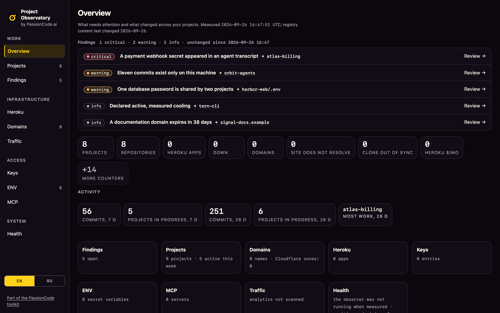

Know what exists
Choose the project directory you want to observe. The full engine discovers repositories inside that scope and builds a local registry.
OPEN SOURCE / RUNS ON YOUR MACHINE / FROM PASSIONCODE.AI
A local dashboard for the projects your agents work on. See what changed, what needs attention and where known API keys left a copy. In English or Russian.
Paste it into your agent. It will guide the local setup.
Set up the full Project Observatory from https://github.com/passioncode-ai/project-observatory-dashboard Read README.md, SECURITY.md, docs/ONBOARDING.md and docs/AGENT-ONBOARDING.md first. Use an isolated Python environment and a separate private workspace. Check requirements, run full init and full doctor. Help me choose my project directory, explain what is read, then run full local and open the local dashboard. Offer integrations separately. Have me enter keys through a local hidden prompt or credential manager, never this chat. Do not echo values, publish private reports, enable paid actions or start background jobs without my explicit choice. Show coverage, unavailable sources and next actions. Explain upgrade preview, backup and restore. Keep the original installation intact during any migration.
No API key needed to start. Requirements & manual install ↓

01 / THE BLIND SPOT
An agent reads a configuration file. A tool echoes its output. The result stays in a session log, a memory database or a generated report.
Deleting the original output does not revoke the credential. Observatory can compare known secret values against the artifacts you explicitly select, then record a finding without repeating the value.
A local exposure is not evidence of remote exfiltration or a vulnerability in the application that stored it.
API_TOKEN=[REDACTED] FIELD NOTESI went looking for forgotten projects. I found copies of my API keysI wanted to map my folders and revive old projects. Repeated key warnings changed what I needed to see. Read the story ↗
FIELD NOTESI went looking for forgotten projects. I found copies of my API keysI wanted to map my folders and revive old projects. Repeated key warnings changed what I needed to see. Read the story ↗
02 / AN EXAMPLE YOU CAN READ
SYNTHETIC EXAMPLE Fictional project and credential. No live data.
tool_result → configuration output
API_TOKEN=[REDACTED]
… other session events …The project still runs. The copied credential is easy to miss among ordinary work artifacts.
Detection records a finding. It does not rotate the key or erase your history automatically.
The demo illustrates the workflow. It is not a count of incidents found in production.
03 / MORE THAN SECRET SCANNING
Choose the project directory you want to observe. The full engine discovers repositories inside that scope and builds a local registry.
Inspect working-tree state, Git activity, dependency counts and disk metrics across your configured project scope.
Keep credential metadata separate from values. Scan selected text and SQLite artifacts for known values with redacted findings.
Use the CLI, MCP tools and local dashboards to inspect projects, findings and history. Keep generated reports in your private workspace.
COMPLETE LOCAL ENGINE
The original engine is included: project inventory, metrics, findings, MCP, provider adapters, credential tools and optional background jobs. Start locally. Enable integrations individually with your own accounts and keys.
Read the migration and compatibility guide ↗04 / ONBOARD THROUGH YOUR AGENT
git clone https://github.com/passioncode-ai/project-observatory-dashboard.git cd project-observatory-dashboard python3 -m venv .venv .venv/bin/python -m pip install -c requirements-full.lock '.[full]' .venv/bin/project-observatory full init .venv/bin/project-observatory full onboard
Python 3.11 or newer with SQLite extension support, Git and Node.js; macOS and Linux. Use Homebrew Python on macOS. The agent helps you select a project folder and run the first local observation. A separate fictional demo remains available in the compatibility CLI.
You do not need API keys to try the local workflow. Hand the prompt to your coding agent. It reads the setup guide, prepares an isolated environment and explains each step.
05 / THE LARGER WORKING METHOD
The ssheleg harness connects task intent, specialist skills, verification and handoff. Observatory adds an optional observation layer around the repositories your agents work on.
Your coding agent remains the runtime and permission boundary. Observatory is a local instrument, not a sandbox or a promise to detect every secret.
06 / PART OF PASSIONCODE.AI
PassionCode.ai builds tools for AI-native work. Project Observatory joins Switchboard, the account manager for Claude Code and Codex, as an open-source tool you can install now. Fabric, the CEO AI agent that coordinates the work around them, is in development.
One design system across the family: the same dark surface, gold for action and focus, and each product’s glyph on its own tile.
BEFORE YOU START
Project Observatory is an open-source local tool for inspecting project folders, repository activity, metrics and findings. Its optional credential checks look for known secret values in supported artifacts you select.
Your inventory and observations live in your private workspace. Optional integrations have their own access and data flows; review them before enabling them. The public website never reads your installation.
No. Known-value scanning compares selected artifacts with credentials already known locally. It cannot promise to find unknown secrets, every encoded copy or every backup, or establish whether someone obtained a key.
ssheleg Skills supplies reusable instructions for coding agents. Observatory is a separately installed observation tool in the same harness. Read how a project inventory became an observatory, then use the agent-guided setup.